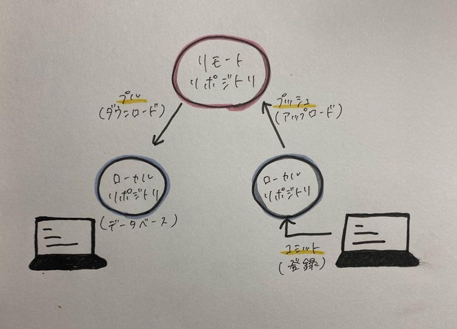

- 古いバージョンから新しいバージョンのファイルまで管理できる
修正をする際に新しいファイルを増やしたり、見分けがつくようにファイル名を変えたりする必要もありません。
そのため、従来に比べてはるかにファイル管理がしやすくなります。
- 簡単に古いバージョンに戻せる
Gitが各ファイルの変更履歴を管理しているので、簡単に古いバージョンへ戻すことができます。
仮に誤って上書きしてしまっても、すぐに任意のバージョンに戻せるのです。
- チームでファイルや変更履歴をスムーズに共有できる
共有ストレージ上のファイルを共同で編集する場合、バージョンごとなどでファイルが作成されフォルダ内が煩雑になっていました。
しかし、Gitを使うことでファイルを増やす必要がなくなり、スムーズに共有できるようになりました。
🩵Gitのデメリット・注意点
一部メンバーだけ従来通り共有ストレージを使うことになると、効率が大幅に下がってしまうので現実的ではないでしょう。
Gitを使って共同作業の効率を上げるためには、適切に運用ルールを構築・周知する必要があるのです。
リポジトリとは❓
- ローカルリポジトリ→自分のコンピュータに保存されているプロジェクトの履歴。個人的な記録。
- リモートリポジトリ→複数の人で共同作業するためのもの。
2種類のリポジトリに分けることで、普段の作業はそれぞれのユーザーが手元のローカルリポジトリで行い、
作業内容を共有するときにリモートリポジトリで公開するという使い方になります。
そのため、リモートリポジトリを通して他のユーザーの作業内容を把握する事が可能となります。
イメージ↓

HTMLとは、Hyper Text Markup Languageの略であり、Webページを作成するために開発されたWebプログラミング言語です。
現在インターネット上で公開されているすべてのWebサイトでHTMLが使われています。
HTMLを使用することで、段落や見出しなどの文章構成、Webページのリンクの挿入、画像の表示といったWebサイトを作成する
上での基本的な構造及び機能の制作を行うことができます。
HTMLタグの種類
- 見出し [h]
- 文字を書く [div]
- 画像の挿入 [img]
- 箇条書き [li]
- リンクを挿入 [a]
- YouTubeの貼り付け [div class="video"]etc...
実際にやってみると…
〈img src="写真のファイル名"width="好みの倍率"〉を入力 ↓
(私の推しのジヒョです💖)
- リンクの挿入
〈a href="挿入したいリンク"＞表示名〈/a〉を入力↓
TWICE.HP
- YouTubeの貼り付け
- 動画を開く
- 共有をクリック
- 共有オプションから「埋め込む」をクリック
- HTMLコードをコピー
- 〈div class="video"〉コピーした埋め込みコード〈/div〉
参考サイト
「入門」Gitとは?できることや使い方、Githabとの違いをわかりやすく解説
HTMLとは?初心者向けに基本構造からタグの使い方まで解説！